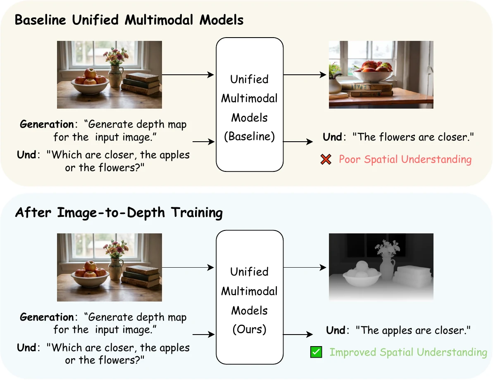

Zihan Su
M.S. Student at Tsinghua University
Hi! I am Zihan Su (Chinese name: 苏梓瀚), a master's student in Computer Technology at Tsinghua University, advised by Prof. Chun Yuan. My research focuses on unified multimodal generation and understanding, and AIGC. I have interned at Tencent WXG, Alibaba, and ByteDance Jindouyun Talent Program.
Detailed Profile (详细个人介绍)
Hi! I am Zihan Su (Chinese name: 苏梓瀚), a master's student in Computer Technology at Tsinghua University, advised by Prof. Chun Yuan. My research focuses on unified multimodal generation and understanding, and AIGC. I am interested in competitive programming and won several ACM-ICPC silver medals, and ranked top 0.68% nationwide in CCF CSP. I have first-author papers at ICML 2026, NeurIPS 2025, and ICASSP 2025 Oral. My internship experience spans AIGC deployment projects in ByteDance's Jindouyun Talent Program, unified multimodal generation and understanding at Alibaba, and MLLM post-training at Tencent WXG.
Hi！我是苏梓瀚 (English name: Zihan Su)， 清华大学计算机技术硕士研究生，导师是 袁春教授。 我的研究方向包括统一多模态生成与理解、AIGC。 我对程序设计竞赛感兴趣，曾获得多枚 ACM-ICPC 银牌，并在 CCF CSP 中排名全国前 0.68%。 我以第一作者身份在 ICML 2026、NeurIPS 2025 和 ICASSP 2025 Oral 发表论文。我的实习经历包括字节跳动筋斗云 AIGC 落地项目、 阿里巴巴统一多模态生成与理解，以及腾讯 WXG 多模态大模型后训练。
News
- 04/2026 🎉 Started an AIGC algorithm internship in ByteDance's Jindouyun Talent Program.
- 01/2026 🎉 UniMRG was accepted to ICML 2026 as a first-author paper.
- 09/2025 🎉 Joined Alibaba as an academic research intern.
- 09/2025 🎉 Safe-Sora was accepted to NeurIPS 2025 as a first-author paper.
- 09/2025 🏆 Received the Tsinghua Friend - Ordos Talent Scholarship.
- 06/2025 🎉 Joined Tencent WXG as an MLLM post-training intern.
- 01/2025 🎉 TextureDiffusion was accepted as an ICASSP 2025 Oral paper.
- 09/2024 🎓 Began my master's journey at Tsinghua University.
- 08/2023 🏆 Selected as a CCF Outstanding Undergraduate, one of 99 students nationwide.
Education
-
Sep. 2024
—
Present -
Sep. 2020
—
Jul. 2024
Publications
-
'" />

UniMRG